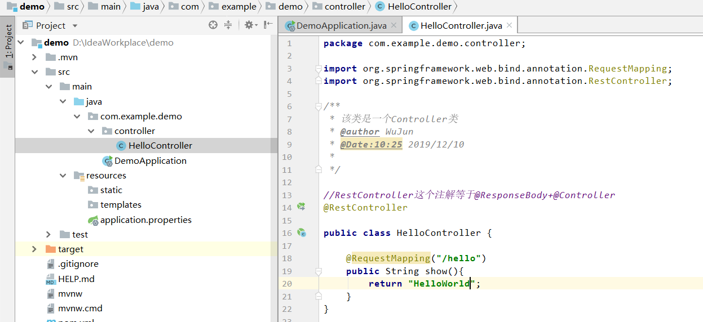
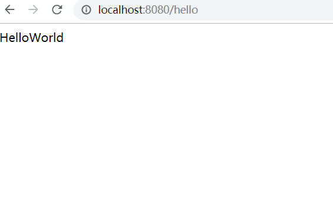
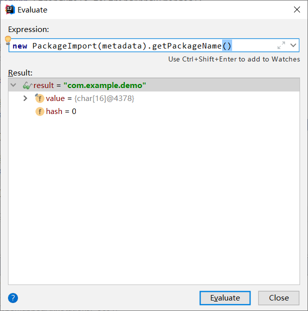
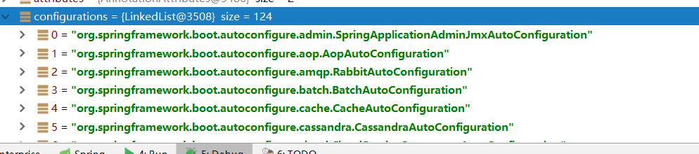
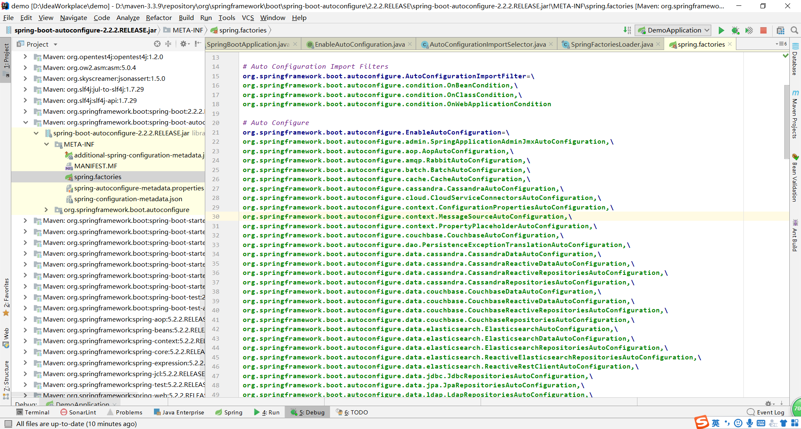
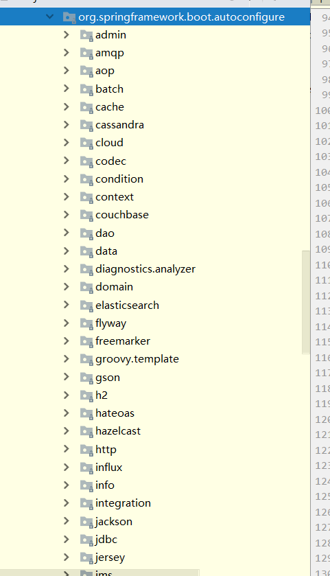

原文连接:https://www.cnblogs.com/wujunstart/p/12015895.html
一.问题的引入
首先我们来看一个最简单的例子。
我们先创建一个SpringBoot的工程，如何创建一个SpringBoot工程就不说了，不会请自行解决。然后写一个controller类，通过请求路径，返回HelloWorld在浏览器页面上显示。


上面两张图就是程序的一个整体的结构和运行的结果，那么问题来了，SpringBoot程序中没有任何配置，不像Spring框架，写一大堆配置信息在xml文件中，那么程序是怎么将我们这里的Controller类扫描到spring容器中的呢？
二.原理讲解。
首先第一点，我们来看一下SpringBoot的启动类，
package com.example.demo;
import org.springframework.boot.SpringApplication;
import org.springframework.boot.autoconfigure.SpringBootApplication;
@SpringBootApplication
public class DemoApplication {
public static void main(String[] args) {
//启动SpringBoot应用
SpringApplication.run(DemoApplication.class, args);
}
}
其中，我们看到一个注解@SpringBootApplication，SpringBoot应用标注在某个类上说明这个类是SpringBoot的主配置类，SpringBoot就应该运行这个类的main方法来启动SpringBoot应用；
然后我们点进去看看这个注解到底包含了什么，
@Target(ElementType.TYPE)
@Retention(RetentionPolicy.RUNTIME)
@Documented
@Inherited
@SpringBootConfiguration
@EnableAutoConfiguration
@ComponentScan(excludeFilters = { @Filter(type = FilterType.CUSTOM, classes = TypeExcludeFilter.class),
@Filter(type = FilterType.CUSTOM, classes = AutoConfigurationExcludeFilter.class) })
public @interface SpringBootApplication {
其中我们需要重点关注的就是@SpringBootConfiguration、@EnableAutoConfiguration
下面我们逐个来讲解:
@SpringBootConfiguration这个注解顾名思义，标注在某个类上，这个类就是SpringBoot的配置类，我们再点进去看看。
@Target(ElementType.TYPE)
@Retention(RetentionPolicy.RUNTIME)
@Documented
@Configuration
原来这个注解是底层是Spring中的注解@Configuration,而@Configuration注解底层就是一个@Component，代表一个容器。
SpringBoot的精髓是在@EnableAutoConfiguration这个注解上，根据名字，我们可以知道这是一个自动配置类，也就是能够实现一些自动配置的功能，那么具体是配置了什么东西呢？
我们再点进去看看
@Target(ElementType.TYPE)
@Retention(RetentionPolicy.RUNTIME)
@Documented
@Inherited
@AutoConfigurationPackage
@Import(AutoConfigurationImportSelector.class)
我们看见了和这个注解有关联的重要的两个注解@AutoConfigurationPackage，@Import(AutoConfigurationImportSelector.class)，也是分别给大家讲解一下。
1.@AutoConfigurationPackage
@AutoConfigurationPackage：这是一个自动配置的包，我们来看下在这个程序中是配置了哪个包，点进来
@Import(AutoConfigurationPackages.Registrar.class)
再点到Register,我们看到在大概123行的位置，有一段代码。
@Override
public void registerBeanDefinitions(AnnotationMetadata metadata, BeanDefinitionRegistry registry) {
register(registry, new PackageImport(metadata).getPackageName());
}
我们看到这个方法器中一个参数metadata，代表注解的元信息，然后我们通过这个注解的元信息来获这个包名，我们在这打个断点，debug运行，可以看见一些元信息的基本内容，最主要我们要知道是导入了哪个包，我们选中new PackageImport(metadata).getPackageName()，右键计算一下

发现导入的包就是我们项目的根目录，假如我们新建一个包叫com.controller，在里面写一个controller类，大家可以运行的试一下是否能成功呢。
2.@Import(AutoConfigurationImportSelector.class)
@Import(AutoConfigurationImportSelector.class):这个注解代表的是一个自动配置的选择器，那么要导入哪些组件的选择器呢？
我们点进去，看到非常重要的一段。
protected AutoConfigurationEntry getAutoConfigurationEntry(AutoConfigurationMetadata autoConfigurationMetadata,
AnnotationMetadata annotationMetadata) {
if (!isEnabled(annotationMetadata)) {
return EMPTY_ENTRY;
}
AnnotationAttributes attributes = getAttributes(annotationMetadata);
List<String> configurations = getCandidateConfigurations(annotationMetadata, attributes);
configurations = removeDuplicates(configurations);
Set<String> exclusions = getExclusions(annotationMetadata, attributes);
checkExcludedClasses(configurations, exclusions);
configurations.removeAll(exclusions);
configurations = filter(configurations, autoConfigurationMetadata);
fireAutoConfigurationImportEvents(configurations, exclusions);
return new AutoConfigurationEntry(configurations, exclusions);
}
这里我们获得到了一个configurations 的list集合，我们打个断点看看这个集合中到底给我们装了些什么东西。

我们发现这个configurations 里面装配了124个自动配置类，原来我们没有配置的一些信息，都通过SpringBoot的自动配置类给我配置好了。
那么我还想知道这些类SpringBoot程序给我们放到哪了呢，我们看到getCandidateConfigurations(annotationMetadata, attributes)；
点进去，我们看到：
List<String> configurations = SpringFactoriesLoader.loadFactoryNames(getSpringFactoriesLoaderFactoryClass()
那么再点进去我们看看到底加载的工厂名称是啥，
try {
Enumeration<URL> urls = (classLoader != null ?
classLoader.getResources(FACTORIES_RESOURCE_LOCATION) :
ClassLoader.getSystemResources(FACTORIES_RESOURCE_LOCATION));
result = new LinkedMultiValueMap<>();
while (urls.hasMoreElements()) {
URL url = urls.nextElement();
UrlResource resource = new UrlResource(url);
Properties properties = PropertiesLoaderUtils.loadProperties(resource);
for (Map.Entry<?, ?> entry : properties.entrySet()) {
String factoryTypeName = ((String) entry.getKey()).trim();
for (String factoryImplementationName : StringUtils.commaDelimitedListToStringArray((String) entry.getValue())) {
result.add(factoryTypeName, factoryImplementationName.trim());
}
}
}
我们看到其中类加载器给我们获取了资源，我们点进去，
点了这么多次，终于找到我们想要的答案了！！！
public static final String FACTORIES_RESOURCE_LOCATION = "META-INF/spring.factories";
原来这些自动配置类都在类路径下的"META-INF/spring.factories"

还有下面的autoconfigure包中的内容，我们也看看

这里面我们所有所用到的配置类全部由SpringBoot给我们配置了，所以我们知道SpringBoot表面上是零配置的，其实底层都给我们封装好了，也是方便我们程序员进行开发。
那么有些人肯定又有疑惑，SpringBoot怎么知道给我们自动配置哪些类呢？
欲知后事如何，请关注一下作者，纯手打码字不易，也是希望和大家多多交流，一起学习，谢谢！